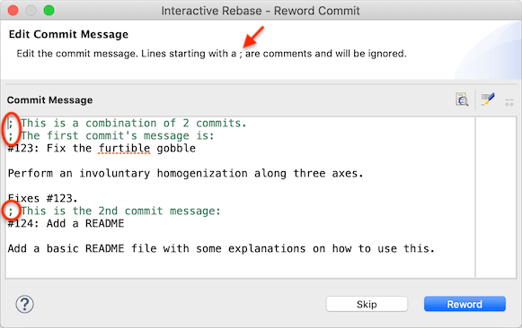
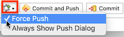
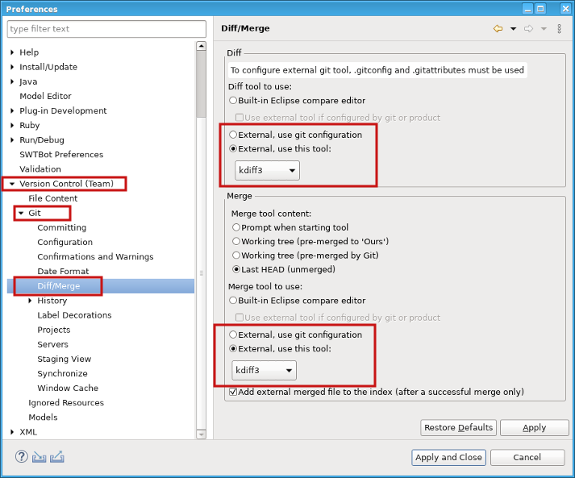

| EGit 6.2 New and Noteworthy | ||
|---|---|---|
|
|
||
| Contributors | ||
EGit 6.1 had introduced support for git config commit.cleanup, including syntax coloring comment lines in commit messages, and a preview of the final commit message after cleaning.
EGit 6.2 adds support for git config core.commentChar. It enables users to change the default comment character # to some other ASCII character. EGit 6.2 takes this setting into account and determines comment lines in commit messages accordingly, for instance with core.commentChar = ; as:

The Git Staging View has a new "Push Settings" button with a cogwheel icon, providing a way to customize some settings for the push part of the Commit & Push operation.

There are options to perform a force push, or to open a push dialog instead of just pushing automatically. If the "Force Push" option is active, the button's icon shows a little green plus sign top-right.
Settings made here are persisted; they are stored separately per repository, and they will be in effect for any Commit & Push operation on a particular repository until changed again via this "Push Settings" button.
Commit & Push performs the equivalent of
git push <remote> HEAD:<upstream branch>
The remote is determined via git configs branch.<name>.pushRemote, remote.pushDefault, branch.<name>.remote, "origin". The upstream branch is determined from the branch.<name>.merge git configuration of the currently checked out branch; if none is set, the upstream branch is assumed to have the same name as the current local branch.
Activating the "Force Push" option changes this to
git push <remote> +HEAD:<upstream branch>
Note: if the repository is configured for Gerrit and the Commit & Push operation will attempt pushing to Gerrit, then the "Push Settings" button is not available. First, the command will in that case always use a dialog, and second, force pushing a commit as a new change or patch set to Gerrit makes no sense.
EGit 6.2 supports the use of external diff and merge tools. An external tool can be configured via a new preference page, potentially combined with git repository configuration, as well as per product customization.
To configure an external diff or merge tool via the preference page:

Alternatively, you can select using the available git configuration and configure a tool via git config:
[merge]
tool = customMergeTool
[mergetool "customMergeTool"]
cmd = kdiff3 "$LOCAL" "$REMOTE" "$MERGED" "$BASE"
path = /usr/bin/kdiff3
prompt = false
trustExitCode = false
[diff]
tool = customDiffTool
[difftool "customDiffTool"]
cmd = kdiff3 "$LOCAL" "$REMOTE"
To use a tool available on your system as default, specify e.g. the following via git config:
[merge]
tool = kdiff3
You can override the default tool per folder and per file type, using the .gitattributes file in a folder. The override will apply for subfolders, as long as a subfolder does not override the tool via .gitattributes:
attributes: * mergetool=kdiff3 *.txt difftool=kompare
To configure an external diff or merge tool via product customization, specify the following in your customization file (passed to Eclipse via the command line argument, e.g. -pluginCustomization /some/path/my_customization.ini):
org.eclipse.egit.ui/diff_tool_custom=kdiff3 org.eclipse.egit.ui/diff_tool_mode=3
You can also configure a external tools per-extension. The value of the preference is comma separated pairs of extension and invocation command:
org.eclipse.egit.ui/external_diff_tool_per_extension=txt,/usr/bin/kdiff3 "$LOCAL" "$REMOTE" org.eclipse.egit.ui/diff_tool_mode=1
The complete list of new features and bug fixes is available in the release notes.
|
|
||
| Contributors |